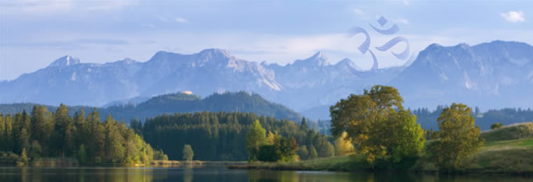

<div ng-controller="HomeCtrl as Ctrl">


<div class="container">

    <div class="row">
        
    </div>

    <div class="row top-buffer">

        <div class="col-md-2">
            <div class="imgAbt">
                
            </div>
        </div>
        <div class="col-md-8">
            <p>
                Welcome to the Ann Arbor Meditation Circle of Self-Realization Fellowship. This Meditation Group is composed of devoted members and friends of Self-Realization Fellowship, a worldwide nonprofit organization with international headquarters in Los Angeles, California.
            </p>

            <p>
                Self-Realization Fellowship was founded in 1920 by Paramahansa Yogananda for the purpose of disseminating Kriya Yoga, a definite scientific technique for attaining direct personal experience of God. Through its worldwide service and teachings, Self-Realization Fellowship seeks to awaken greater understanding of the harmony underlying all true religions, and a fuller expression in this world of the love that unites all people when they realize their oneness in God.
            </p>

            <blockquote>
                <p>"From Joy we came; for Joy we live; and in the sacred divine joy we will one day melt again."</p>
                <footer>Paramahansa Yogananda</footer>
            </blockquote>
        </div>

    </div>

</div>

</div>